模型选项卡: 概览 - 视图、资源管理器和面板
模型选项卡概览: 一个模型的六个区域 - 查看与检查、建模、UV、权重、纹理绘制和动画 - 每个区域都有相同的视图、场景资源管理器、右侧面板和时间轴。模型按游戏的方式绘制; 鼠标、按键和布局按你的选择与 3ds Max 或 Blender 相同。
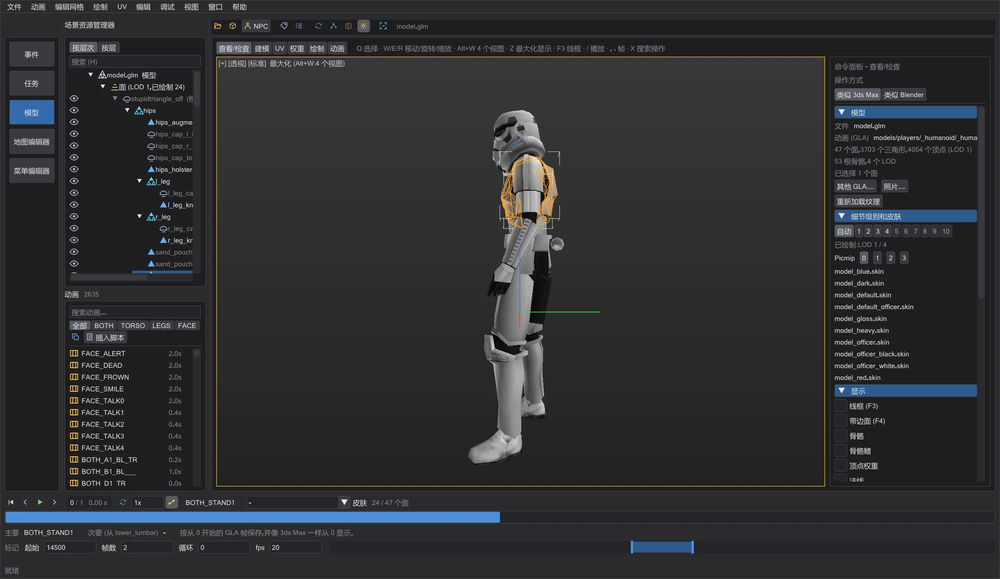
像以前一样打开模型(NPC、.glm、.pk3)。选项卡从 查看/检查 开始 (模型选项卡: 查看与检查); 视图上方的区域栏可切换到 建模 (模型选项卡: 建模与地图道具)、UV (模型选项卡: 创建 UV)、权重 (模型选项卡: Weights)、绘制 (模型选项卡: 纹理绘制) 和 动画 (模型选项卡: 动画区域的面板)。视图、场景资源管理器和时间轴 (模型选项卡: 时间轴) 在每个区域都相同, 工作时姿势继续播放。模型连同所有细节级别载入自己的文档;未修改的模型绘制出的画面与以前完全相同(已用 Jedi Academy、Jedi Outcast 和 Movie Duels 中 models/players 下的每个模型检查)。
多个模型的标签页#
视图上方每个打开的模型都有一个标签页, 名称如 kyle/model.glm (文件夹和文件); 一旦打开第二个模型或剪贴板中有面, 就会显示这一行 - 只有一个模型时标签和以前一样。单击标签页即切换到该模型; 每个标签页都保留其模型的全部内容: 文件、GLA 和动画及当前帧、选择、撤销历史、修改器堆栈和伴随文件、绑定和控制绑定、绘制、时间轴、相机和视图。+、Ctrl+O 以及“模型”组中的 在新标签页中打开 会在新标签页中打开另一个模型 - 模型文件或游戏文件中的模型。已打开的模型不会重复打开: 会切换到它的标签页。导入…… 和以前一样替换当前标签页的模型。标签页上的 x 关闭它; 有未保存的更改时会先询问, 退出时每个有未保存更改的模型都会询问。最后一个标签页不会消失, 而是变为空。右键单击标签页: 关闭标签页、关闭其他标签页。
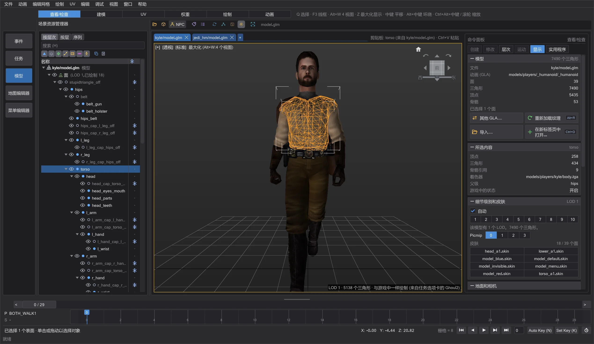
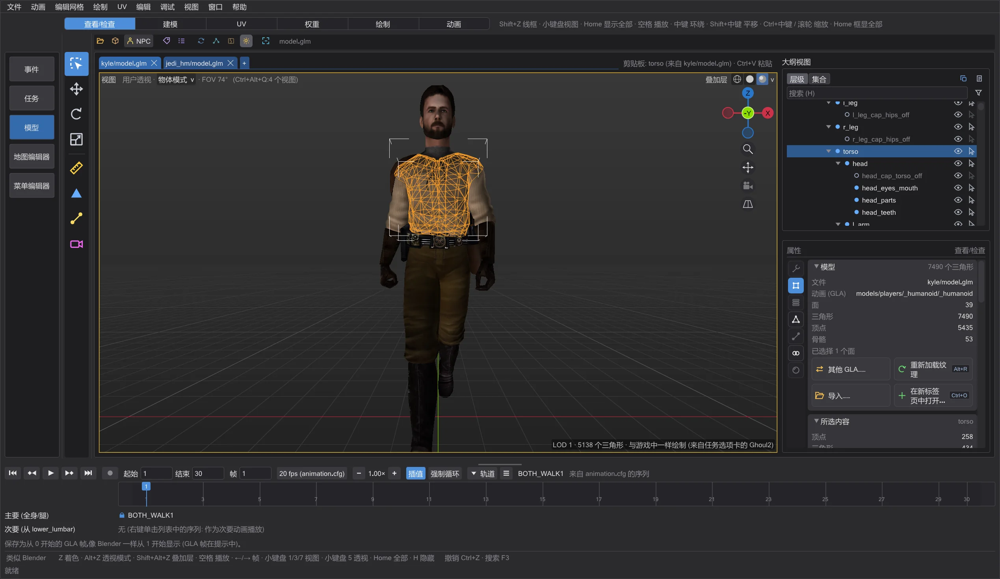
将面从一个模型复制到另一个模型: 在场景资源管理器中右键单击一个面并选择 复制 (Ctrl+C 复制所选面)。标签行右侧显示剪贴板中的内容。在同一模型或另一个模型中, 面的右键菜单中的 粘贴为此项的子项 (Ctrl+V: 粘贴到所选面下) 会将它们粘贴为该面的子项, 作为该模型的一个撤销步骤。权重转到同名骨骼; 模型中没有的骨骼会把权重交给其最近的已有父骨骼 - 消息会逐一列出, 不会悄悄丢失任何内容。所有 LOD 一并带入 (多于模型的部分被省略, 不足的用最粗的填充), 源模型显示的着色器和修改器堆栈也一并带入; 已存在的名称会加上 _1、_2。会检查游戏的限制 (每个面的顶点数、每个面 32 根骨骼、每个顶点 4 个权重) 并在消息中列出。粘贴到 .md3 道具中的面是刚性的。在“动画”区域中, Ctrl+C 和 Ctrl+V 复制和粘贴姿势, 与 Blender 相同。
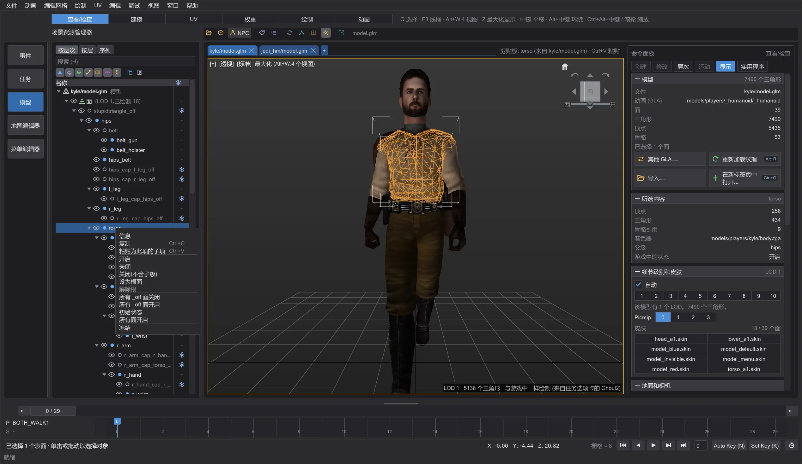
场景资源管理器#
场景资源管理器 显示面(按层次 或 按层)、标记和骨架的骨骼;搜索 (H) 按名称过滤。灰色的面不会被绘制。右键单击的作用与 ModView 和游戏相同 (G2_SetSurfaceOnOff、G2_SetRootSurface):关闭 隐藏该面但保留其子级,关闭(不含子级) 隐藏整个分支,设为根面 只绘制此分支,初始状态 全部撤销。皮肤中的 name,*off 行也以同样方式关闭一个面。带橙色圆点的骨骼会被游戏代码查找。

右键单击标记(例如 *r_hand)或骨骼并选择 附加模型……,即可从游戏存档附加模型——光剑、武器、头部——与 G2API_AttachG2Model 相同:附加在标记上时跟随标记三角形,附加在骨骼上时跟随骨骼。分组 附加物 列出它们并可再次分离。
一棵树包含一切:最上面是模型,其下是带层级的 面、带挂接模型的 标签、骨骼、控制绑定的控制柄以及 animation.cfg 的序列——选项卡的每个区域都是同一棵树。单击序列将其作为主序列播放(带 P 的锁),右键可将其锁定为次序列(S);红色警告标志标出帧位于 GLA 末尾之后的序列。节点下的列表只显示一个分组(BOTH_、TORSO_、LEGS_、FACE_),旁边的两个按钮复制名称并打开 插入脚本(也可双击)。搜索 (H) 按名称筛选所有行。
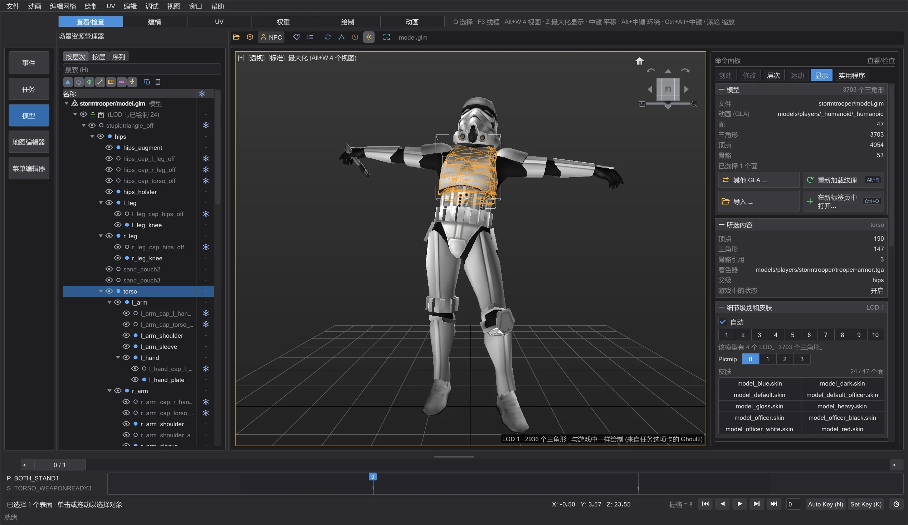
行的布局随操作模式而变。类似 3ds Max(场景资源管理器):折叠箭头、眼睛和符号紧挨在名称前,每一级缩进一个符号的宽度;已冻结 列(雪花)用于冻结。列标题可以拖动宽度,单击 名称 可按升序、降序排序并恢复层级顺序。搜索框下方的符号行可显示或隐藏各种行(面、封口、标签、骨骼、序列、挂接的模型、绑定控制柄;Ctrl+单击:仅此种类)。类似 Blender(大纲视图,切换 层级 / 集合):树在左侧,眼睛和“可选”箭头在右侧的固定列中,种类位于搜索框旁的 筛选 弹出面板中(含 骨骼显示为平面列表 和 按字母排序)。树从不横向滚动:较深的骨骼会排得更紧,放不下的名称以“...”结尾并在工具提示中完整显示,同时显示该行的信息(顶点、三角形、着色器、父级、游戏中的状态——右键菜单中的 信息 也可查看)。Shift+单击可选择从上次单击的面到此面的所有面。面前面的标记:圆点 = 开,圆环 = 关,带斜线的圆环 = 连同子级一起关,名称后面的锚 = 根面。
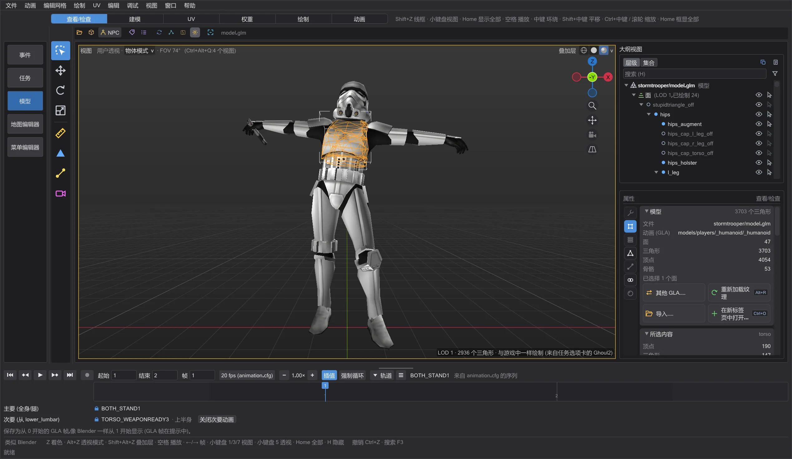
按层(与 Blender 相同:集合)把同样的行归入图层:身体、封口 (_off)、标签、骨骼、挂接物 以及其他细节级别(LOD 2、LOD 3 ……)。图层的眼睛只在视图中隐藏其所有行——游戏保持不变;游戏绘制什么仍由面的开/关决定。雪花(与 Blender 相同:箭头)用于冻结:冻结的行保持可见;在树中单击仅在 3ds Max 模式下会选中(Blender 模式下不会),在视图中单击会穿过它选中后面的面(与 3ds Max 相同),选择框会跳过它们,若后面没有面,状态栏会说明原因。封口从一开始就是冻结的,因此单击角色时不会选中封口。LOD 图层的眼睛显示该细节级别。每一行都有同样的两个开关;Ctrl+单击眼睛只显示这一行,Shift+单击雪花会连同子级一起处理。
场景资源管理器中的冻结行 (3ds Max 模式): 单击冻结的行即可选择它, 与 3ds Max 的场景资源管理器相同 - 例如随后在该行的右键菜单或“搜索所有操作”中用 解冻所选内容 解冻。在视图中单击仍会穿过冻结的面, 选中其后面的面。Blender 模式下, 箭头“可选择”关闭的行仍和以前一样不可选择。
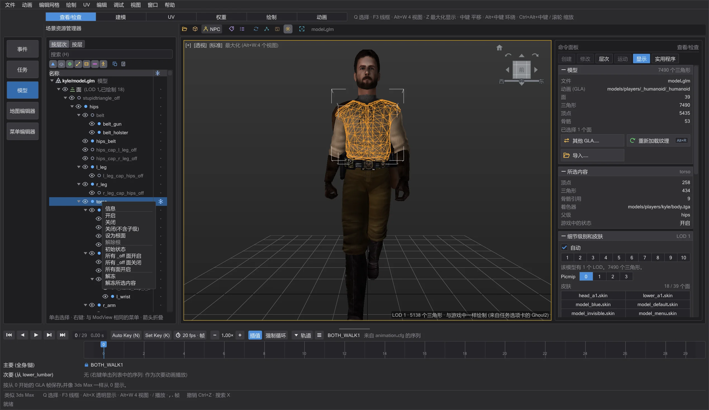
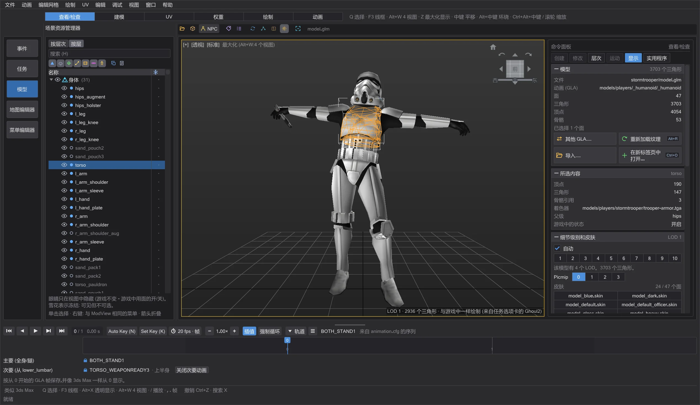
次要序列像游戏中的 SET_ANIM_UPPER 一样在 lower_lumbar 以上的上半身播放 (其他起始骨骼: 右键单击骨骼)。插值 像游戏一样在两帧之间混合。
场景资源管理器的每一行都显示其类型:模型、标记、骨骼、根骨骼、附件、绑定控制柄、序列;LOD 位于面的标题中。面前面的标记显示其在游戏中的状态 (圆点 = 开, 圆环 = 关, 带斜线的圆环 = 连同子级一起关)。单击眼睛会连同子级一起隐藏该行,Ctrl 或 Alt+单击只显示这一个;全部取消隐藏 在右键菜单和操作搜索中。隐藏的行显示为灰色;选择、绘制和照片会跳过它们。像 Blender 一样:H、Alt+H、Shift+H。
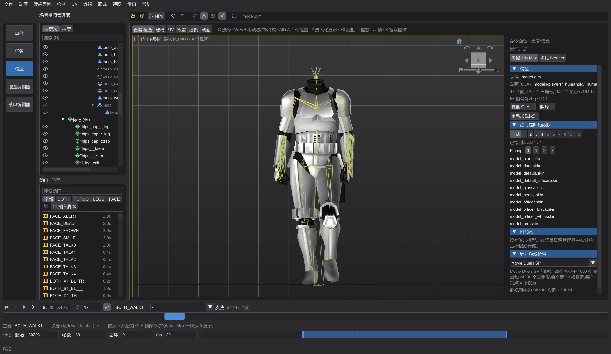
命令面板#
右侧面板随操作方式而变。 类似 3ds Max:带有选项卡 创建、修改、层次、运动、显示 和 实用程序 的 命令面板,分组使用平直的标题条。类似 Blender:属性,左侧是一列竖排图标(工具、物体、修改器、数据、骨骼、约束、材质——名称显示在工具提示中),分组是圆角面板。选项卡的每个区域会选择自己的选项卡——查看/检查 打开 显示 或 物体,动画 打开 运动 或 骨骼——并在那里自上而下显示它的全部分组。其他选项卡显示各自的部分:在 查看/检查 中,层次 下是挂接的模型,实用程序 下是针对游戏的检查。当前区域中没有内容的选项卡显示为灰色。
在小窗口中 (高度低于约 50 行文字, 例如程序的最小尺寸), 命令面板 的选项卡以文字显示需要两到三行。此时 类似 3ds Max 选项卡只以图标排成一行, 与 类似 Blender 时 属性 的图标列相同; 选项卡的名称显示在其工具提示中。面板因此为分组保留空间。
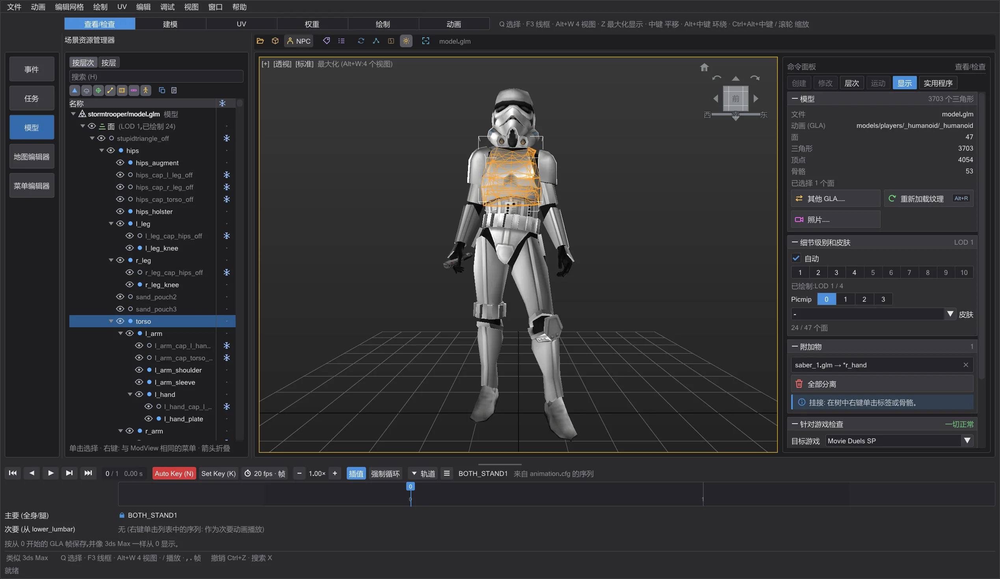
每个分组的形式都相同。 单击标题可折叠分组;标题右侧有简要信息(三角形数、已绘制的 LOD、挂接模型的数量、检查的结果——绿色的 一切正常 或带数量的红色)。按钮排成两列等宽的网格,每个按钮带有图标,并在有快捷键时以小键帽显示当前操作方式的按键;分组的主按钮以强调色突出显示。数值以表格显示(名称在左,数值在右),LOD 1-10 或 Picmip 0-3 这样的选择是一条相连的按钮行,提示放在带信息图标的方框里。面板较窄时不会截断任何内容:文字会换行,网格改用一列。
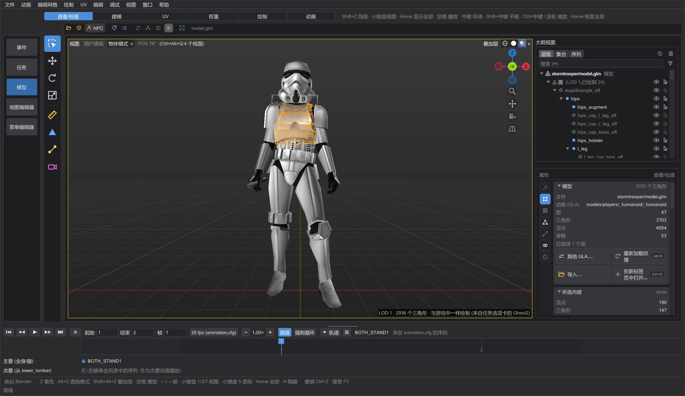
宽度、区域和操作方式。 拖动视图与面板之间的边缘可加宽或收窄面板(双击恢复默认宽度);程序会记住该宽度。选项卡的区域——查看/检查、建模、UV、权重、绘制、动画——作为一行等宽的格子横跨整个选项卡,位于资源管理器、视图和面板的上方;旁边是一条简短提示,列出当前区域在该操作方式下的按键和鼠标导航。操作方式本身可以这样切换:单击选项卡状态栏左侧的 类似 3ds Max / 类似 Blender,或在视图标题的菜单(操作方式)、设置中切换,也可以通过搜索所有操作来切换。
视图标题栏、ViewCube 与 Gizmo#
每个视图左上角都有标题栏, 如 3ds Max 的视口标签菜单——鼠标悬停时字段高亮, 左键或右键单击打开其菜单。[+]: 最大化视口 (Alt+W)、最大化显示 (Z)、视图显示的内容 (网格 G、地面、原点、包围盒、选择框 J、统计 7、高度标尺、纯色背景)、子菜单 骨骼与检查 (骨骼、鳍、法线、标记、裂缝查找、顶点与三角形编号)、ViewCube 和视野。[透视]: 观察点, 使用 3ds Max 的按键 (P、U、T、B、F、L) 以及 起始视图 (角色正面)。[标准]: 此视图的着色——线框 (F3)、边面 (F4)、双面、白色纹理、顶点权重、剪影。四视图中每个视图保留自己的着色、网格和统计。视图的右键菜单中有相同的菜单, 搜索所有操作 (X) (X) 能找到每个开关, 其提示说明它的位置。需要选中面的开关 (编号、裂缝查找) 在选中面之前会在视图中提示。
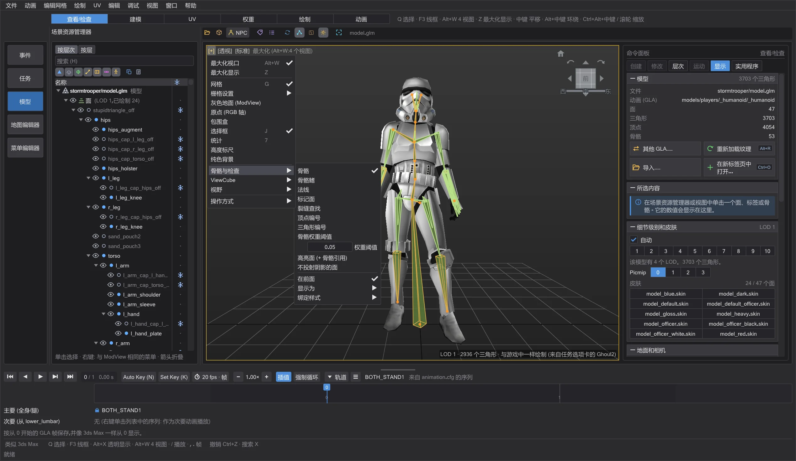
活动视图右上角的 ViewCube 显示观察方向, 其行为与 3ds Max 的相同。它有 26 个目标——6 个面、12 条边、8 个角; 鼠标下的目标会高亮, 单击后视图以简短动画转到该方向。投影保持不变: 透视视图仍为透视; 在正交视图中, 面切换到其视图 (前、顶 ...), 边或角得到自由的 正交 视图。拖动立方体可环绕。下方的指南针环标有北、东、南、西: 拖动圆环只绕垂直轴旋转, 单击字母则从该方向观察。正对某个面时, 四个箭头通向相邻的面, 两个弯曲箭头将视图滚动 90 度。左上角的房子是 Home: 相机飞到角色正面居中的位置。右键菜单提供 Home、将当前视图设为 Home 和 正交。设为 Home 的视图会随角色保留: JK Studio 按角色记住它, 重新启动后仍然有效。重置 Home 使起始视图重新成为 Home。鼠标不在其上时立方体为半透明。角色在 .glm 中朝向 -Y (游戏会把它转向 +X), 所以前视图显示其面部——加载角色后、Alt+W 之后以及重置视图时也是如此; 与 3ds Max 相同, 北方位于“前”面之后。[+] > ViewCube 可关闭立方体或指南针、在全部四个视图中显示立方体, 并设置 北方角度。

Blender 模式下标题栏的布局与 Blender 的 3D 视图相同: 左侧为 视图 菜单 (框显所选、框显全部、透视/正交、带小键盘按键的 观察点、带环绕、滚动和对面的 导航、切换四视图), 右侧为 叠加层 和 视口着色 的三个按钮——线框、实体、材质预览——以及用于背面剔除和剪影的下拉菜单。其下方是导航 Gizmo: 单击轴沿其观察, 再次单击从对面观察, 拖动可环绕 (轴视图会变为透视, 如 Blender 的自动透视); 下方为缩放、移动、摄像机视图 (呈灰色——模型选项卡没有场景摄像机) 和透视/正交。小键盘与 Blender 相同: 4/6/8/2 环绕 15 度, Shift+4/6 滚动, 9 为对面, Ctrl+1/3/7 为后、左、底, Shift+Z 线框, Ctrl+` 切换 Gizmo。

ViewCube 源自 WhiteoutDex (max_viewcube.h, BSD 3-Clause 许可, Copyright (c) 2026 WhiteoutDex Contributors) 和 WhiteoutFlakes (BSD 3-Clause 许可, 附 AI 衍生作品声明, Copyright (c) 2026 Fernando Sahmkow); 导航 Gizmo 由 JK Studio 自行绘制——不含 Autodesk 或 Blender 的图形。
地面栅格#
每个视图默认显示栅格, 如 3ds Max 的主栅格: 按栅格间距的细线、较深的主线、黑色的世界坐标轴。透视图中它位于地面上, 7 条线后结束 (Max: 透视视图栅格范围); 在顶、前、左等视图中它位于视图平面内, 填满整个视图并随缩放变化——缩小时主线成为新的线, 放大时不会比间距更细, 与 Max 相同。角色会遮挡栅格。[+] > 网格 (G) 为此视图切换。[+] > 栅格设置 设置 栅格间距 (8 个 JKA 单位, 与地图编辑器的栅格相同)、每 N 条栅格线一条主线 (8: 每 64 单位一条主线——玩家的高度)、透视图栅格范围 和 地面高度: 默认 -24, 即 JKA 角色的脚。3ds Max 和 Blender 将栅格放在 Z = 0, 但 JKA 角色的原点在髋部。最低点 将地面放到角色当前姿势的最低点之下 (原点在地面的道具: 0)。间距和主线也在设置中 (模型选项卡: 栅格)。ModView 的灰色地面 (灰色地面 (ModView)) 仍是单独的开关, 可与栅格同时显示。
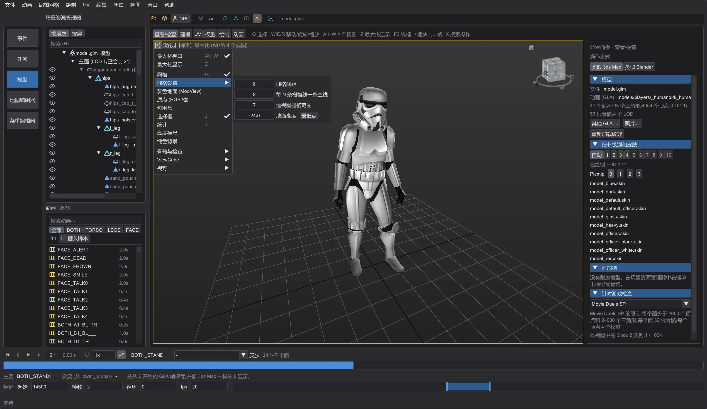
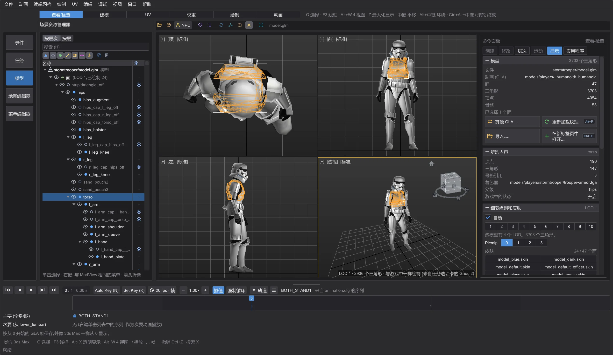
在 Blender 模式下, 栅格的外观和行为与 Blender 的叠加层相同: 地面向地平线淡出, 看起来无边无际, X 轴为红色, Y 轴为绿色 (开启后 Z 为蓝色); 侧视图中细分随缩放变化。叠加层 > 参考线 包含 网格 (侧视图)、地面 (透视)、坐标轴 X Y Z、缩放 和 细分——每个视图保留自己的开关; 缩放和细分即上文的间距和主线。
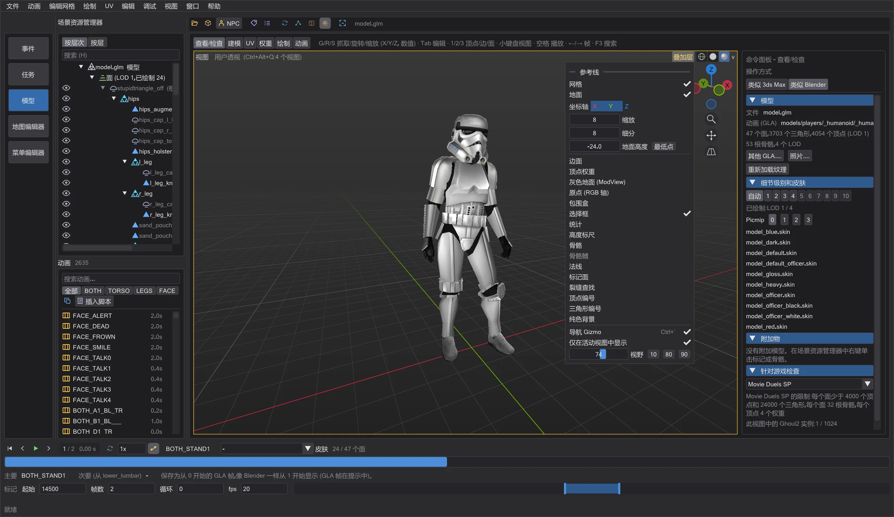
视图导航#
鼠标和按键移动视图的方式与所设模式的程序完全相同 (设置 > 模型选项卡 > 操作方式): 如 3ds Max 或如 Blender。视图上方的一行列出最重要的操作, 每个命令也在视图标题栏的菜单中 ([视图名] > 导航, Blender 模式下为 View > 导航)、右键菜单和搜索 (X / F3) 中。平移时场景精确跟随鼠标, 缩放和环绕保持视图中央的点不动。
如 3ds Max
| 鼠标 / 按键 | 作用 |
|---|---|
| 鼠标中键 | 平移: 视图跟随鼠标。按住 Shift 时仅沿最先拖动的方向。 |
| Alt+鼠标中键 | 围绕 导航 > 环绕中心 中选择的点环绕 (默认是选择, 无选择时为视图中心)。顶、前、左等视图会变为自由的正交视图。按住 Shift 时仅绕最先使用的轴。 |
| Ctrl+Alt+鼠标中键 | 缩放: 向上拉近, 向下拉远。 |
| 滚轮, [ ], Ctrl+= Ctrl+- | 围绕鼠标下的点分级缩放 (围绕鼠标点缩放 (正交) / 围绕鼠标点缩放 (透视); 关闭时围绕视图中心)。 |
| Z, Ctrl+Alt+Z | 最大化显示: Z 将选择 (无选择时为整个角色) 适配到所有视图, Ctrl+Alt+Z 将整个角色适配到活动视图, Ctrl+Shift+Z 将整个角色适配到所有视图 (所有视口最大化显示 (Ctrl+Shift+Z)) - 与 3ds Max 相同; 此时重做为 Ctrl+Y。在 Blender 模式下 Ctrl+Shift+Z 仍为重做。 |
| Ctrl+Alt+Shift+Z, Alt+Shift+Z | 放大 2 倍 / 缩小 2 倍。 |
| Alt+Z, Ctrl+P, Ctrl+R, Ctrl+W | 与 3ds Max 右下角按钮相同的导航模式——缩放、平移、环绕、区域缩放: 用左键拖动, 模式名称显示在视图底部; 右键单击或 Esc 结束。环绕模式显示黄色圆圈: 圆内自由旋转, 在四个手柄之一上只绕一个轴, 圆外滚动。区域缩放: 拖出的矩形随后填满视图。 |
| I | 平移到指针: 鼠标下的点移到视图中央。 |
| Shift+Z, Shift+Y | 撤销 / 重做活动视图的上一次视图更改 (平移、缩放、旋转、ViewCube)——每个视图各有历史, 与 Ctrl+Z 无关。 |
| T B F L P U, V | 顶、底、前、左、透视、正交视图; V 在鼠标指针处打开所有视图的菜单。 |
| Alt+W, Alt+Home, Ctrl+Alt+V | 单视图或四视图; 主视图 (ViewCube 的 Home); 显示或隐藏 ViewCube。 |
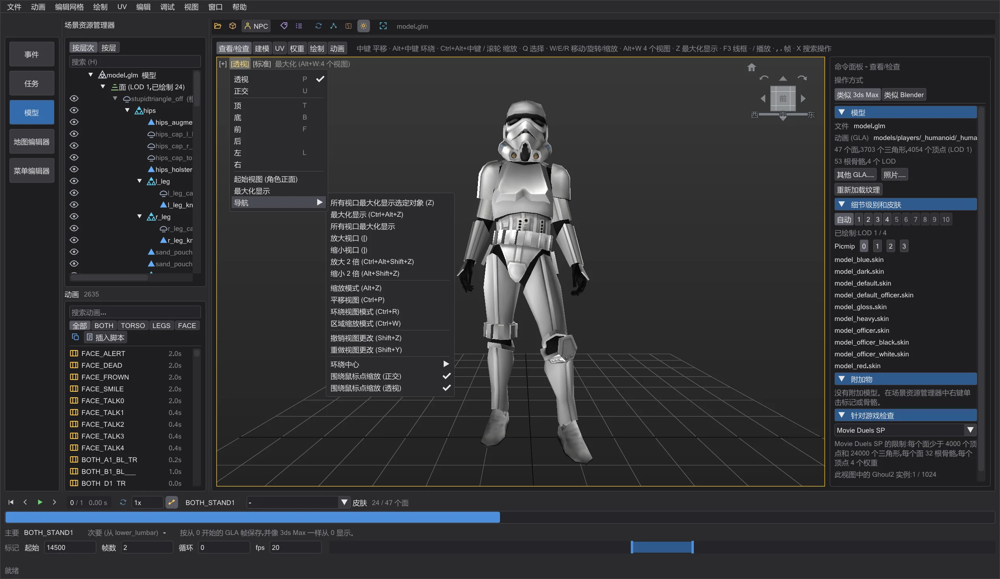
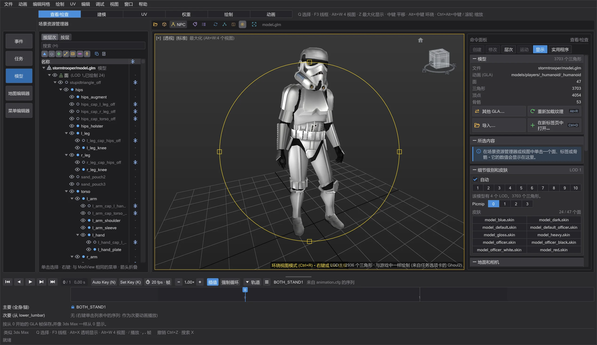
如 Blender
| 鼠标 / 按键 | 作用 |
|---|---|
| 鼠标中键 | 环绕 (转盘): 左右绕垂直轴, 上下越过角色——也可越过顶点。前、右、顶等视图会变为透视 (自动透视)。拖动时按住 Alt 可吸附到沿轴和对角线的视图。 |
| Shift+鼠标中键 | 平移: 视图跟随鼠标。 |
| Ctrl+鼠标中键 | 上下拖动缩放 (Blender 的 Dolly 缩放)。 |
| 滚轮, Numpad + Numpad -, Ctrl+= Ctrl+- | 分级缩放: 每级将距离除以或乘以 1.2, 围绕视图中心 (开启 缩放至鼠标位置 时朝向鼠标)。 |
| Alt+鼠标中键 | 拖动将视图转四分之一圈到相邻的轴向视图 (右、左、上、下); 单击将鼠标下角色上的点移到视图中央。 |
| Numpad 1 Numpad 3 Numpad 7, Numpad 5, Numpad 9 | 前、右、顶 (按 Ctrl 为对面), 正交并平滑旋转; Numpad 5 在同一方向上切换透视与正交; Numpad 9 为对面。 |
| Numpad 4 Numpad 6 Numpad 8 Numpad 2 | 以 15 度为步长环绕 (4 和 6: 相机向左和向右, 8 和 2: 向上和向下); 按 Shift 时 4 和 6 滚动视图, 按 Ctrl 时四个键平移视图。 |
| Numpad ., Home, Shift+C | 框显所选 (未选择时无操作)、框显全部, 以及包含原点的框显全部。方向不变。 |
| `, Shift+B, Ctrl+Alt+Q | 鼠标指针处的视图饼菜单 (左、右、底、顶、前、后、框显所选); 缩放区域——拖出一个矩形, 之后它填满视图; 四视图: 顶、透视、前、右。 |
| Gizmo | 右上角的 Gizmo: 单击轴切换到其视图 (正对某轴时, 单击中间为对面), 拖动它可环绕; 下方的按钮通过拖动缩放和平移, 并在透视与正交之间切换。 |
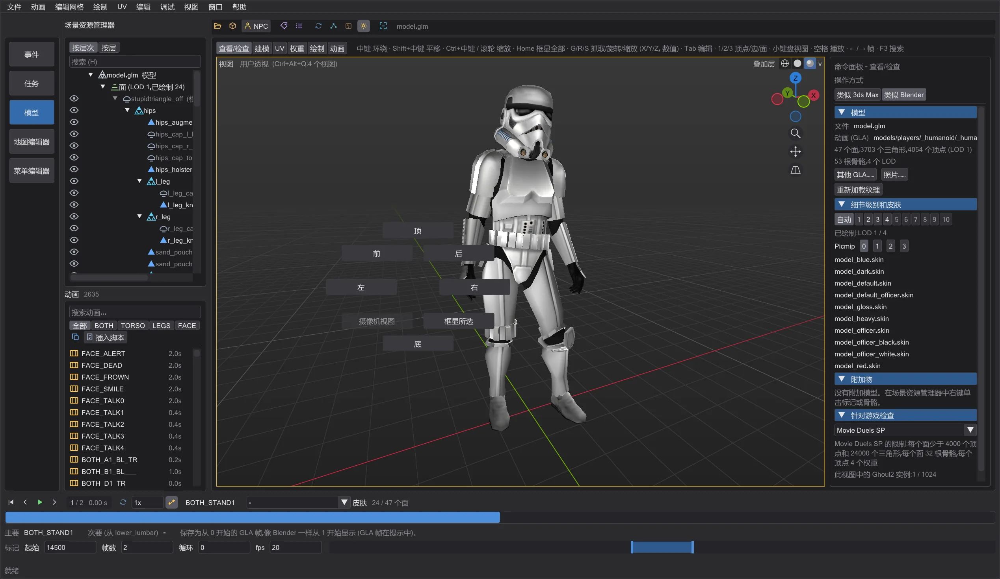
导航 中还有设置: 如 3ds Max 的 环绕中心 (视图中心 (Orbit)、选定对象 (Orbit Selected)、子对象选择 (Orbit SubObject)、鼠标下的点 (Orbit Point of Interest)) 和两个开关 围绕鼠标点缩放 (正交) / 围绕鼠标点缩放 (透视); 如 Blender 的 围绕选择物体旋转 和 缩放至鼠标位置 (与 Blender 一样默认关闭)。未实现: 3ds Max 的 SteeringWheels 和穿行模式, Blender 的行走/飞行导航和轨迹球环绕, 摄像机视图。